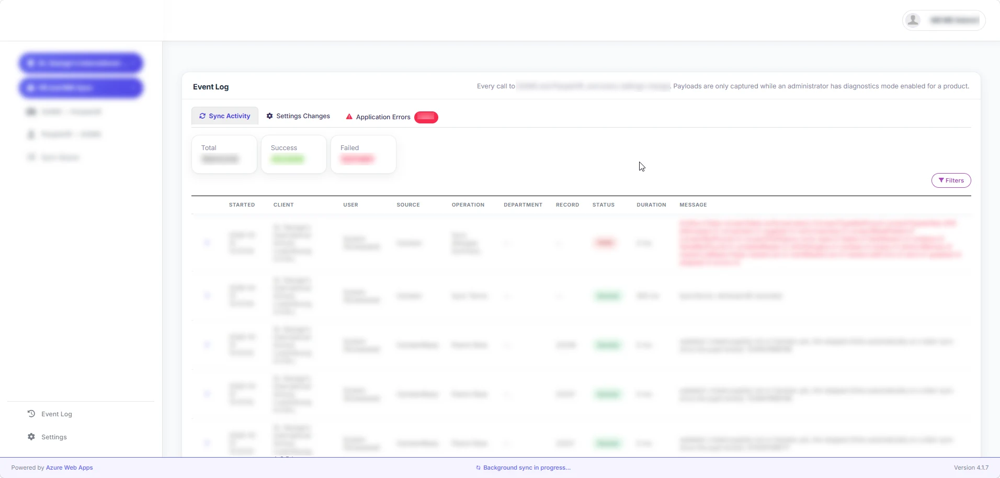
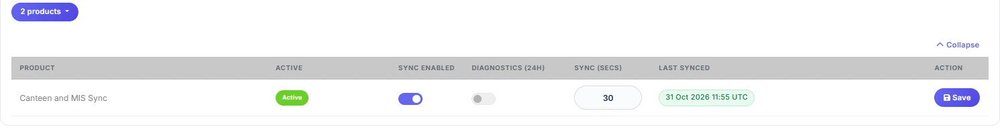

An HR system that could not talk to the school's records system. One integration, designed from scratch, became a GDPR-compliant platform that connects multiple products and clients and holds no personal data itself.
A school bought an HR system that does not connect to its school management system out of the box. The HR system is the source of truth for staff, and the school management system needs the same records. The two had to be kept in step, safely, with personal data involved.
I designed the integration from scratch and owned it end to end: the product, the project, the requirements, the testing and the rollout. Developers built it. Near the end I fixed bugs and fine-tuned it myself with Claude Code.
It started as a minimum viable version for one HR system. Each need that followed, whether another system, another client or another product, went onto the same base instead of a new build, until it was a hub.
Each direction can be switched on or off, with the HR system as the source of truth.
Set by the person who owns that system.
Every record visible and syncable by hand, live error messages, and a filterable event viewer.
The platform is GDPR-compliant by design. Records pass through it and it keeps none: nothing personal is stored in its database or web app. When something goes wrong, diagnostics can be switched on for one product to capture what is needed to find the cause. Switched off, all personal data is purged.
Support gets the visibility it needs, and the school does not gain a second copy of its people data.


The first version synced exactly what was specified: what is synced and where it lands. Nobody asked what happens when the data arrives. The old synchronization ran business rules after the sync, and that is not part of an API sync. That process knowledge was mine to supply, and I missed it. It showed at go-live, and the rules and reconciliation were rebuilt in the backend.
Today I start every migration the same way: full access to the old code on day one, a gap analysis of what the old system does, what the API can replicate and what must become backend logic, and a test system with a realistic copy of live data.
It is the base for new integrations across multiple clients and products.
Terms: API integration, system integration, HR system, school management system, two-way sync, Azure, GDPR, legacy modernization, integration architecture.